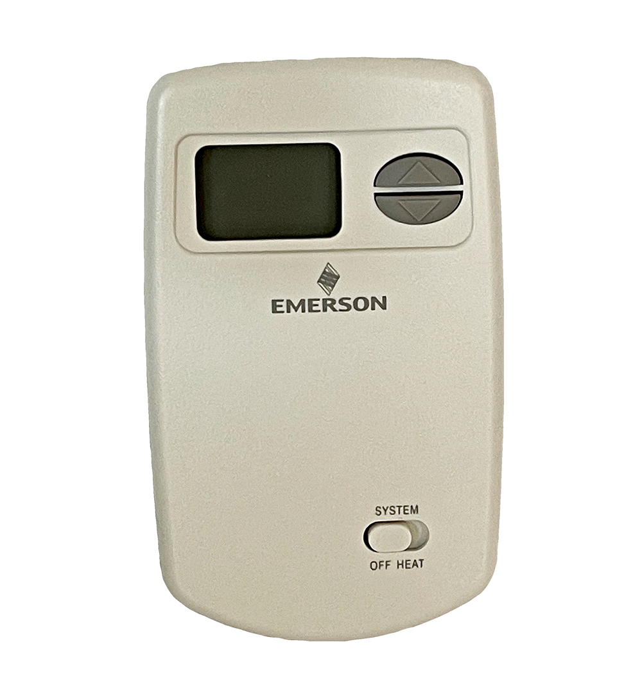
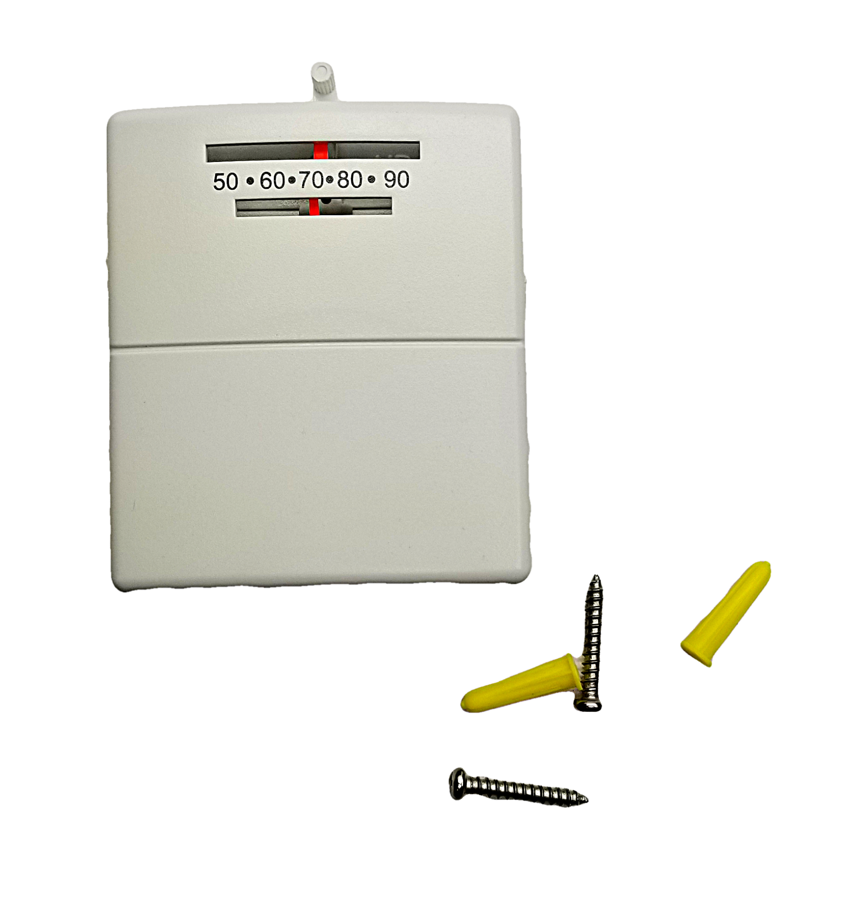
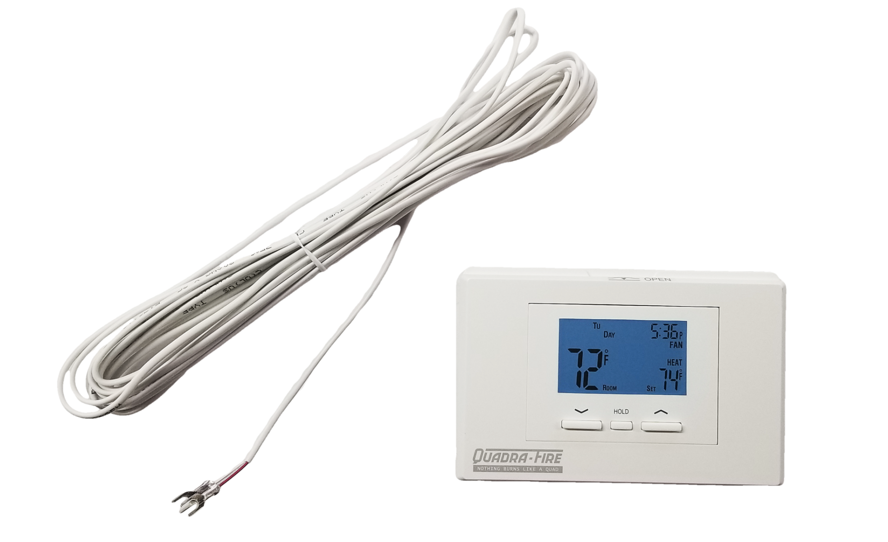
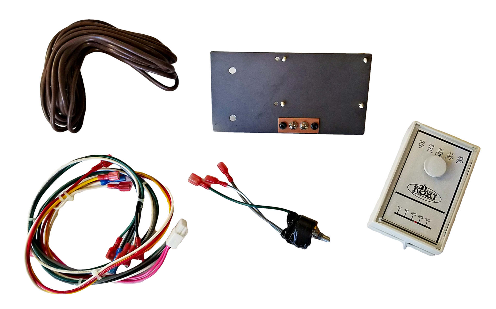

AMP-TSTAT
Country Pellet
- Winslow PI40
- Winslow PS40
Heatilator Pellet
- CAB50
- PS35
- PS50
Iron Strike Pellet
- Winslow PI40
- Winslow PS40
Lennox Pellet
- Winslow PI40
- Winslow PS40
Quadra-Fire Pellet
- Castile Freestanding
- Castile Insert
- Contour
- Mt Vernon OE
- Santa Fe
- Santa Fe Insert
Whitfield
- Optima 2 (A02)
- Optima 3 (A03)
Napoleon Gas
- BGD33NR
- BGD34NT
- BGD42N-D
- Crystallo BGD36CFGN
- EF30 (Electric)
- GD33NR
- GD34NT
- GD36NTR
- GDI-30GN
- GDIZC-N
- GDS20 Arlington
- GDS25 Bayfield
- GDS26 Castlemore
- GDS28 Haliburton
- GDS50 Havelock
- GDS60 Knightsbridge
- GL18
- GL24
- GL30
- Grandville 36 BGD36NTR
- Grandville 42 BGD42CFN
- Grandville BGD36CFNTR
- Grandville GVF36
- Grandville GVF42
- GVFL18
- GVFL24
- GVFL30
- GVFS20 Arlington
- GVFS60 Knightsbridge
- High Definition 35 HD35NT
- High Definition 40 HD40NT
- High Definition 46 HD46NT
- High Definition X 40 HDX40
- Inspiration GDI-44N
- Linear LHD45
- Manhattan GD36MN
- Multi-View BGD40N
- Multi-View GVF40
- Plazmafire WHD31N
- Roxbury GDI-30N
- Roxbury GI3600N
- Starfire GD70NT-1S
- Vittoria GD19N
Napoleon Pellet
- NPI45
- NPS45
MARLUXTSTAT
Model Note:
- Lincoln SCR – Serial Number 0 to 300
- Lincoln SCS – Serial Number 301 and above
- Correct for any stove replacing a low millivolt magnetic wall thermostat.
St. Croix
- Afton Bay
- Ashby-P
- Eclipse
- Element-MF
- Element-P
- Greenfield
- Hastings
- Lincoln SCR
- Lincoln SCS
- Prescott EX / EXP
- Prescott EXL
- York Insert
Lennox Pellet
- Cascade-2
- Montage 32FS
- Optima 2 FS (A02)
- Optima 3 FS (A03)
- Optima 3 Insert (A03)
- Profile 20 FS (P9)
- Profile 30 FS (P10)
- Profile 30 Insert (P10)
- Traditions - (T300P, T301P, T305P, T308P)
- Winslow PI40
- Winslow PS40
Pleasant Hearth
- Ph45PS
- PH50CABPS
- PH50PS
- PHC90
Quadra-Fire Pellet
- 1200 Freestanding
- 1200i Insert
- Castile Freestanding
- Castile Insert
- Contour
- Edge 60
- Mt Vernon OE
- Santa Fe
- Santa Fe Insert
Whitfield
- Cascade (WP5)
- Optima 2 (A02)
- Optima 3 (A03)
- Profile 20 (P9)
- Profile 30 (P10)
- Profile 30 Insert (P10)
- Traditions (T300P, T301P, T305P, T308P)
PROG-STAT
Quadra-Fire Pellet
- 1200 Freestanding
- 1200i Insert
- Castile Freestanding
- Castile Insert
- Mt Vernon E2
- Mt Vernon E2 Insert
- Santa Fe
- Santa Fe Insert
Quadra-Fire Wood
- Adventure II
- Adventure III
- Pioneer III
HLW01
Model Note:
- This conversion kit is for early models with the rotary dial manual adjustment control board (Prior to the MX Digital Control Board).
Kozi Pellet
- 100 Insert
- 100 XL
- Baywin
- KSH Shop Heaters
- Model 100
- Previa
SRV7080-098
Model Note:
- Replaces SRV7080-155 with a wired model.
Quadra-Fire Pellet
- Trekker
- Trekker Insert